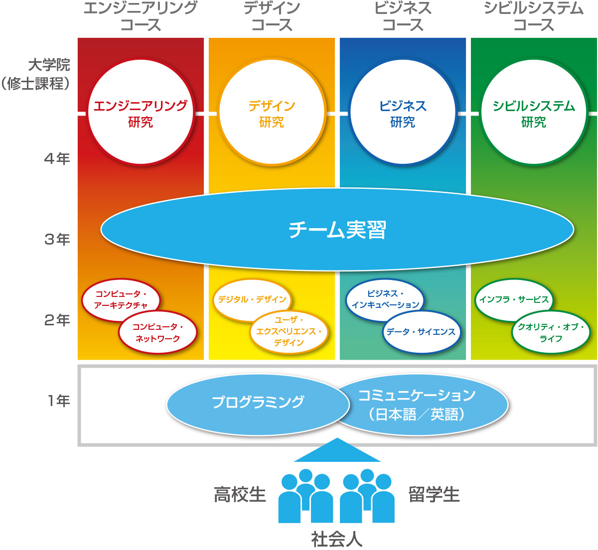

縲梧枚繝ｻ闃ｸ繝ｻ逅???陞榊粋縲阪?譁ｰ蟄ｦ蝠城?伜沺繧貞卸騾?
縲檎炊縲阪?遏･諱ｵ
繧､繝ｳ繧ｿ繝ｼ繝阪ャ繝医?遉ｾ莨壹ｒ螟ｧ縺阪￥螟峨∴縺溘?よ眠縺励＞謚?陦薙′遉ｾ莨壹ｒ螟峨∴縲√◎縺ｮ螟牙喧縺檎?皮ｩｶ髢狗匱縺ｮ繧ｹ繝斐?繝峨ｒ蜉?騾溘＆縺帙ｋ縲 縺昴＠縺ｦ縲√◎縺薙〒逕溘∪繧後◆譁ｰ謚?陦薙′縺輔ｉ縺ｫ遉ｾ莨壹ｒ蜉?騾溘＠縺ｦ...遉ｾ莨壹?螟牙喧縺ｮ繧ｹ繝斐?繝峨?縺ｩ繧薙←繧灘､ｧ縺阪￥縺ｪ縺｣縺ｦ陦後″縺ｾ縺吶?よ眠謚?陦薙?蛻ｩ逕ｨ縲√＆繧峨↓縺ｯ遐皮ｩｶ髢狗匱縺ｫ縺ｯ蠖鍋┯縲檎炊縲阪?遏･諱ｵ縺悟ｿ?ｦ√〒縺吶?
縲梧枚縲阪?遏･諱ｵ
蜊倥↓譁ｰ謚?陦薙?髢狗匱縺ｫ謌仙粥縺励※繧ゅ?√◎繧後□縺代〒縺ｯ謚?陦薙ｒ遉ｾ莨壹↓蜃ｺ縺励※縺?￥縺薙→縺ｯ縺ｧ縺阪↑縺??よ眠謚?陦薙ｒ縺ｩ縺ｮ繧医≧縺ｫ謖∫ｶ夂噪繝薙ず繝阪せ縺ｫ縺､縺ｪ縺偵ｋ縺九??未菫ゅ☆繧区ｳ募ｾ九ｄ隕丞宛繧偵←縺?け繝ｪ繧｢縺吶ｋ縺九→縺?▲縺溘?梧枚縲阪?遏･諱ｵ縺悟ｿ?ｦ√?
縲瑚敢縲阪?遏･諱ｵ
繧､繝ｳ繧ｿ繝ｼ繝阪ャ繝医?荳ｭ縺ｧ蜷後§繧医≧縺ｪ繧ｵ繝ｼ繝薙せ縺ｧ縺ゅ▲縺ｦ繧ゅ?√≠繧九し繝ｼ繝薙せ縺ｯ菴ｿ縺?ｄ縺吶＞縺ｨ縺九?∽ｽｿ縺｣縺ｦ縺?※讌ｽ縺励＞縺ｨ縺?▲縺溘?∽ｺｺ縲??諢滓?ｧ縺ｫ縺?°縺ｫ繝槭ャ繝√☆繧九°縺ｮ蟾ｮ縺悟ｺ?∪繧九→縺阪↓螟ｧ縺阪↑邨先棡縺ｮ驕輔＞縺ｫ縺ｪ縺｣縺ｦ縺?￥縲ゅ◎縺ｮ蟾ｮ繧堤函繧?縺ｮ縺ｯ繝?じ繧､繝ｳ縺ｧ縺ゅｊ縲瑚敢縲阪?遏･諱ｵ縺ｧ縺ゅｋ縲
縺､縺ｪ縺後ｋ蜉
繧､繝ｳ繧ｿ繝ｼ繝阪ャ繝医′螟ｧ縺阪￥遉ｾ莨壹ｒ螟峨∴縺溘?縺ｯ縲御ｺｺ縺ｨ莠ｺ縲阪ｒ繧ｪ繝ｼ繝励Φ縺ｫ蠎?￥縺､縺ｪ縺偵◆縺九ｉ縺ｧ縺吶? 迚ｹ螳壹?莨∵･ｭ縺ｮ荳ｭ縺ｧ縺励°縺､縺ｪ縺後ｉ縺ｪ縺?崕蟄舌Γ繝ｼ繝ｫ繧??繝ｼ繝?繝壹?繧ｸ縺ｧ縺ｯ縺薙ｓ縺ｪ蜉帙?謖√※縺ｪ縺九▲縺溘〒縺励ｇ縺??繝｡繝ｼ繝ｫ繧｢繝峨Ξ繧ｹ繧ФRL繧堤衍縺｣縺ｦ縺?ｌ縺ｰ縲後＞縺､縺ｧ繧ゅ?√←縺薙〒繧ゅ?√□繧後〒繧ゅ?阪▽縺ｪ縺後ｋ
笏?笏?縺昴?繧ｪ繝ｼ繝励Φ諤ｧ縺後う繝ｳ繧ｿ繝ｼ繝阪ャ繝医?蜉帙〒縺吶?
IoT
谺｡縺ｮ螟ｧ縺阪↑謚?陦薙?遉ｾ莨夐擠譁ｰ縺ｮ豕｢縺ｨ險?繧上ｌ縺ｦ縺?ｋ縺ｮ縺後?栗oT: Internet of Things笏?笏?繝｢繝弱?繧､繝ｳ繧ｿ繝ｼ繝阪ャ繝医?阪〒縺吶? 遘?＃縺ｮ霄ｫ縺ｮ蝗槭ｊ縺ｮ縲後Δ繝弱?阪′繝阪ャ繝医Ρ繝ｼ繧ｯ縺ｫ縺､縺ｪ縺後ｊ縲後Δ繝弱→莠ｺ縲阪?√?後Δ繝弱→繝｢繝弱?阪′縲√が繝ｼ繝励Φ縺ｫ縺､縺ｪ縺後ｋ譎ゆｻ｣縺後ｄ縺｣縺ｦ縺阪∪縺吶?繝ｭ繝懊ャ繝医ｂ閾ｪ蜍暮°霆｢閾ｪ蜍戊ｻ翫ｂIoT縺ｮ荳?驛ｨ縺ｧ縺吶?
莉翫∪縺ｧ縺ｮ繧､繝ｳ繧ｿ繝ｼ繝阪ャ繝医?荳也阜繧定ｶ?∴縺ｦ縲√ロ繝?ヨ縺後Δ繝弱ｒ騾壹＠縺ｦ迴ｾ螳溘?荳也阜縺ｨ縺､縺ｪ縺後▲縺ｦ縺?″縺ｾ縺吶? 髢｢騾｣縺吶ｋ豕募ｾ九ｄ蛻ｶ蠎ｦ縺ｯ繧医ｊ隍?尅縺ｫ縺ｪ繧翫?∵焔縺ｧ隗ｦ繧後ｋ迴ｾ螳溘?蠖｢縺ｨ縺励※縺ｮ繝?じ繧､繝ｳ縺ｮ驥崎ｦ∵?ｧ繧るｫ倥∪繧翫∪縺吶?
繧ｳ繝ｳ繧ｻ繝励ヨ縺ｯ縲碁?｣謳ｺ縲
繧ｳ繝ｳ繝斐Η繝ｼ繧ｿ繝ｻ繧､繝ｳ繧ｿ繝ｼ繝阪ャ繝医ｒ縺ｯ縺倥ａ縺ｨ縺励◆縲√＆縺ｾ縺悶∪縺ｪ遘大ｭｦ謚?陦薙↓繧医ｊ縲∵?繧顔ｫ九▲縺ｦ縺?ｋ迴ｾ莉｣遉ｾ莨壹?ゆｸ?莠ｺ縺ｧ蜈ｨ縺ｦ繧堤炊隗｣縺怜虚縺九☆縺薙→縺ｯ髮｣縺励＞譎ゆｻ｣縺ｫ縺ｪ縺｣縺ｦ縺阪※縺?∪縺吶?
莉頑ｱゅａ繧峨ｌ縺ｦ縺?ｋ縺ｮ縺ｯ縲∝､壹￥縺ｮ莠ｺ縲??蜊泌鴨縺ｨ騾｣謳ｺ縺ｧ縺吶?
繧､繝ｳ繧ｿ繝ｼ繝阪ャ繝育､ｾ莨壹?莉翫?∽ｸ也阜縺ｯ縺ｾ縺吶∪縺吶メ繝｣繝ｬ繝ｳ繧ｸ縺悟ｮｹ譏薙↓
繧､繝ｳ繧ｿ繝ｼ繝阪ャ繝医↓繧医▲縺ｦ蝨ｰ逅?噪蛻ｶ邏?′縺ｪ縺上↑繧翫?∬??∴譁ｹ縺悟酔縺倥〒荳?邱偵↓繧?▲縺ｦ縺?¢繧倶ｺｺ縲?→縺ｮ蜃ｺ莨壹＞縺ｯ邁｡蜊倥↓縺ｪ繧翫∪縺励◆縲驕?縺城屬繧後◆縺ｨ縺薙ｍ縺ｫ縺?ｋ莠ｺ驕斐→蜊泌鴨縺励≠縺｣縺ｦ荳?邱偵↓莉穂ｺ九ｒ縺励◆繧奇ｼ医け繝ｩ繧ｦ繝峨?繧ｽ繝ｼ繧ｷ繝ｳ繧ｰ?峨?∬ｨｭ險亥峙繧帝?√ｊ繝｢繝弱ｒ菴懊▲縺ｦ繧ゅｉ縺｣縺ｦ縲√◎繧後ｒ?亥嵜髫幢ｼ牙ｮ??･萓ｿ縺ｧ騾√ｊ霑斐＠縺ｦ繧ゅｉ縺｣縺溘ｊ縺励※縲?ｭ?鴨逧?↑隧ｦ菴懷刀繧剃ｽ懊ｌ縺ｰ縲√ロ繝?ヨ繧帝?壹§縺ｦ蠎?￥荳也阜縺九ｉ雉??繧帝寔繧√ｋ?医け繝ｩ繧ｦ繝峨?繝輔ぃ繝ｳ繝?ぅ繝ｳ繧ｰ?峨％縺ｨ繧ゅ〒縺阪∪縺吶?
荳也阜縺ｧ縺ｯ縲√％縺?＠縺ｦ闍･閠?◆縺｡縺碁擠譁ｰ逧?↑陬ｽ蜩√ｒ荳悶↓蜃ｺ縺励※謌仙粥縺吶ｋ縲後せ繧ｿ繝ｼ繝医い繝??縲阪′蠅励∴縺ｦ縺?∪縺吶?
繧､繝ｳ繧ｿ繝ｼ繝阪ャ繝医?荳ｭ縺ｮ讒倥??↑讖溯?繧?し繝ｼ繝薙せ繧堤ｵ?∩蜷医ｏ縺帙?碁?｣謳ｺ縲阪＆縺帙ｌ縺ｰ窶ｦ
縺?ｍ縺?ｍ縺ｪ讖溯?繝悶Ο繝?け縺後ロ繝?ヨ縺九ｉ邁｡蜊倥↓蜈･謇九〒縺阪?√せ繝槭?繝医ヵ繧ｩ繝ｳ縺ｮ髢狗匱迺ｰ蠅?ｂ蜈?ｮ溘＠縺ｾ縺励◆縲ょｰ代＠縺ｮ繝励Ο繧ｰ繝ｩ繝?縺?縺代〒鬮伜ｺｦ縺ｪ繧｢繝励Μ繧剃ｽ懊ｊ縲∵眠繧ｵ繝ｼ繝薙せ縺ｮ螳溽樟縺悟庄閭ｽ縺ｫ縺ｪ繧翫∪縺吶?
縲碁?｣謳ｺ縲阪?蝓ｺ逶､縺ｯ繧ｳ繝ｳ繝斐Η繝ｼ繧ｿ繝ｻ繧ｵ繧､繧ｨ繝ｳ繧ｹ
繝√?繝?繧堤ｵ?ｓ縺ｧ縲√さ繝ｳ繝斐Η繝ｼ繧ｿ繧剃ｽｿ縺?％縺ｪ縺玲ュ蝣ｱ繧帝?壹＠縺ｦ騾｣謳ｺ縺励? 邏?譌ｩ縺上い繧､繝?い繧貞ｽ｢縺ｫ縺ｧ縺阪ｋ莠ｺ譚舌′莉頑ｱゅａ繧峨ｌ縺ｦ縺?∪縺吶?
繧ｫ繝ｪ繧ｭ繝･繝ｩ繝?

?大ｹｴ谺｡
縺吶∋縺ｦ縺ｮ蟄ｦ逕溘′繝励Ο繧ｰ繝ｩ繝溘Φ繧ｰ縺ｨ譌･繝ｻ闍ｱ繧ｳ繝溘Η繝九こ繝ｼ繧ｷ繝ｧ繝ｳ繧帝寔荳ｭ逧?↓蟄ｦ縺ｳ縲∵ュ蝣ｱ騾｣謳ｺ縺ｮ邏?蝨ｰ繧定ｺｫ縺ｫ縺､縺代ｋ縲
?貞ｹｴ谺｡
4縺､縺ｮ繧ｳ繝ｼ繧ｹ縺ｫ蛻?°繧後?√さ繝ｼ繧ｹ縺斐→縺ｫ?偵▽縺ｮ遐皮ｩｶ蛻??縺ｫ髢｢縺吶ｋ蟆る摩逧?↑遏･隴倥ｒ霄ｫ縺ｫ縺､縺代∪縺吶?ょｮ溯ｷｵ逧?↑貍皮ｿ偵ｒ騾壹§縺ｦ縲∵ュ蝣ｱ騾｣謳ｺ縺ｮ縺溘ａ縺ｮ繧ｹ繧ｭ繝ｫ繧定ｺｫ縺ｫ縺､縺代ｋ縲
?灘ｹｴ谺｡
繧ｳ繝ｼ繧ｹ讓ｪ譁ｭ縺ｮ繝√?繝?螳溽ｿ偵ｒ陦後≧縲ゅメ繝ｼ繝?螳溽ｿ偵?諠??ｱ騾｣謳ｺ縺ｮ螳溯ｷｵ縺ｮ蝣ｴ縺ｧ縺吶?ょ推繧ｳ繝ｼ繧ｹ縺ｧ霄ｫ縺ｫ縺､縺代◆蟆る摩諤ｧ繧呈ｴｻ縺九＠縲√さ繝ｼ繧ｹ讓ｪ譁ｭ縺ｮ繝√?繝?縺ｧ謫ｬ莨ｼ繧ｹ繧ｿ繝ｼ繝医い繝??蝙九?螳溽ｿ偵ｒ陦後＞縺ｾ縺吶?ゅさ繝ｼ繧ｹ縺ｮ莉ｲ髢薙→縺ｮ蜊泌ロ繧帝?壹§縺ｦ縲∫､ｾ莨壹〒縺ｮ蜒阪″譁ｹ繧定ｺｫ縺ｫ縺､縺代ｋ縲
?泌ｹｴ谺｡
遐皮ｩｶ螳､縺ｫ謇?螻槭＠縲∝推繧ｳ繝ｼ繧ｹ縺ｮ蟆る摩諤ｧ繧偵?√＆繧峨↓豺ｱ繧√ｋ縲
髢玖ｬ帑ｺ亥ｮ壹?遘醍岼縺ｫ縺､縺?※縺ｮ隧ｳ邏ｰ縺ｯ
諠??ｱ騾｣謳ｺ蟄ｦ驛ｨ縺ｮ髢玖ｬ帷ｧ醍岼繧貞盾辣ｧ縺励※縺上□縺輔＞縲
IoT譎ゆｻ｣縺ｮ繝励Ο繧ｰ繝ｩ繝溘Φ繧ｰ謨呵ご
縲碁?｣謳ｺ縲阪?蜉帙→縺ｪ繧九?繝ｭ繧ｰ繝ｩ繝溘Φ繧ｰ蝓ｺ遉取蕗閧ｲ
莉翫∪縺ｧ迢ｬ遶九＠縺ｦ蜍輔＞縺ｦ縺?◆縺ゅｉ繧?ｋ繝｢繝弱′IoT (Internet of Things) 縺ｫ繧医▲縺ｦ繝阪ャ繝医Ρ繝ｼ繧ｯ蛹悶＆繧後?∬ｺｫ縺ｮ蜻ｨ繧翫?縺ゅｉ繧?ｋ繧ｵ繝ｼ繝薙せ繧?ｩ滓｢ｰ縺後さ繝ｳ繝斐Η繝ｼ繧ｿ繧帝?壹＠縺ｦ縲碁?｣謳ｺ縲阪☆繧九％縺ｨ縺ｧ遉ｾ莨壹′螟ｧ縺阪￥螟峨ｏ繧阪≧縺ｨ縺励※縺?ｋ縲
遉ｾ莨壼?菴薙′繧ｰ繝ｭ繝ｼ繝舌Ν縺ｫ邨仙粋縺輔ｌ繧医≧縺ｨ縺励※縺?ｋ莉翫?∫ｧ√◆縺｡縺ｫ繧ゆｸ也阜荳ｭ縺ｮ莠ｺ縺溘■縺ｨ縲碁?｣謳ｺ縲阪＠縺ｦ讒倥??↑隱ｲ鬘後ｒ隗｣豎ｺ縺励※縺?￥縺溘ａ縺ｮ蝓ｺ譛ｬ繧ｹ繧ｭ繝ｫ縺梧ｱゅａ繧峨ｌ縺ｦ縺?∪縺吶?諠??ｱ騾｣謳ｺ蟄ｦ驛ｨ縺ｧ縺ｯ縲∽ｸ也阜逧?↓蠎?￥菴ｿ繧上ｌ縺ｦ縺?ｋ繝励Ο繧ｰ繝ｩ繝溘Φ繧ｰ險?隱槭?訓ython縲阪→縲√う繝ｳ繧ｿ繝ｼ繝阪ャ繝医?讓呎ｺ冶ｨ?隱槭?粂TML5縲阪?縲繰avaScript縲咲ｭ峨ｒ逕ｨ縺?※縲∝?繧ｳ繝ｼ繧ｹ蜈ｱ騾壹〒IoT譎ゆｻ｣縺ｮ蝓ｺ譛ｬ繧ｹ繧ｭ繝ｫ縺ｨ縺励※縺ｵ縺輔ｏ縺励＞蝓ｺ遉弱ｒ蟄ｦ縺ｶ縲
縲碁?｣謳ｺ縲阪ｒ繝ｪ繝ｼ繝峨＠縺ｦ縺?￥莠ｺ譚舌ｒ閧ｲ縺ｦ繧句ｰる摩謨呵ご
蝓ｺ遉取蕗閧ｲ縺ｧ蟄ｦ繧薙□騾｣謳ｺ縺ｮ縺溘ａ縺ｮ蜈ｱ騾夂衍隴倥ｒ繝吶?繧ｹ縺ｨ縺励※縲√?碁?｣謳ｺ縲阪ｒ迚ｽ蠑輔＠縺ｦ縺?￥莠ｺ譚舌ｒ閧ｲ縺ｦ繧九◆繧√↓縲∝推繧ｳ繝ｼ繧ｹ縺ｧ縺ｯ迚ｹ蛻･縺ｫ險ｭ險医＆繧後◆蟆る摩繧ｫ繝ｪ繧ｭ繝･繝ｩ繝?繧堤畑諢上＠縺ｦ縺?ｋ縲
繧ｨ繝ｳ繧ｸ繝九い繝ｪ繝ｳ繧ｰ繧ｳ繝ｼ繧ｹ縺ｧ縺ｯ縲√う繝ｳ繧ｿ繝ｼ繝阪ャ繝井ｸ翫?讒倥??↑繧ｯ繝ｩ繧ｦ繝峨す繧ｹ繝?Β縺ｨ騾｣謳ｺ縺悟庄閭ｽ縺ｪ邨?ｾｼ縺ｿ繝｢繝?Ν繧ｫ繝ｼ縲卦-CAR縲阪ｒ逕ｨ縺?※縲！oT 繧ｷ繧ｹ繝?Β蜈ｨ菴薙ｒ讒狗ｯ峨☆繧区ｼ皮ｿ偵′陦後ｏ繧後∪縺吶?讖滓｢ｰ蜊倅ｽ薙?菴懊ｊ譁ｹ繧貞ｭｦ縺ｶ縺?ｏ繧?ｋ縲檎ｵ?ｾｼ縺ｿ貍皮ｿ偵?阪→縺ｯ荳?邱壹ｒ逕ｻ縺吶?√け繝ｩ繧ｦ繝峨→騾｣謳ｺ縺励◆邱丞粋繧ｷ繧ｹ繝?Β繧堤炊隗｣縺輔○繧句?螳ｹ縺ｧ縺ゅｊ縲√∪縺輔↓縺薙ｌ縺九ｉ縺ｮIoT譎ゆｻ｣繧堤何蠑輔＠縺ｦ縺?￥莠ｺ譚占ご謌舌ｒ逶ｮ謖?＠縺ｦ縺?ｋ縲